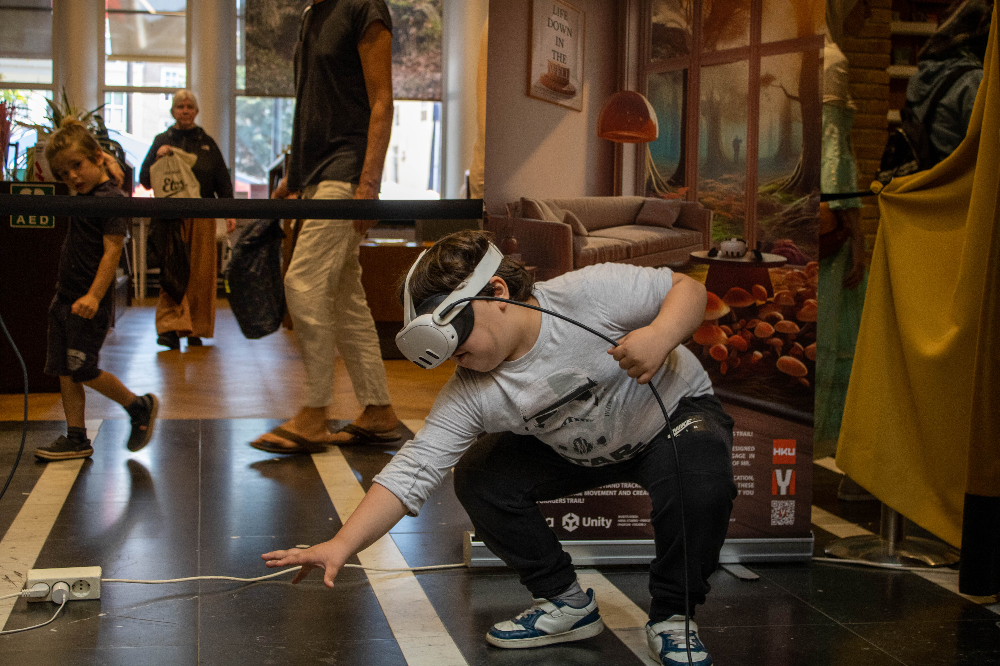
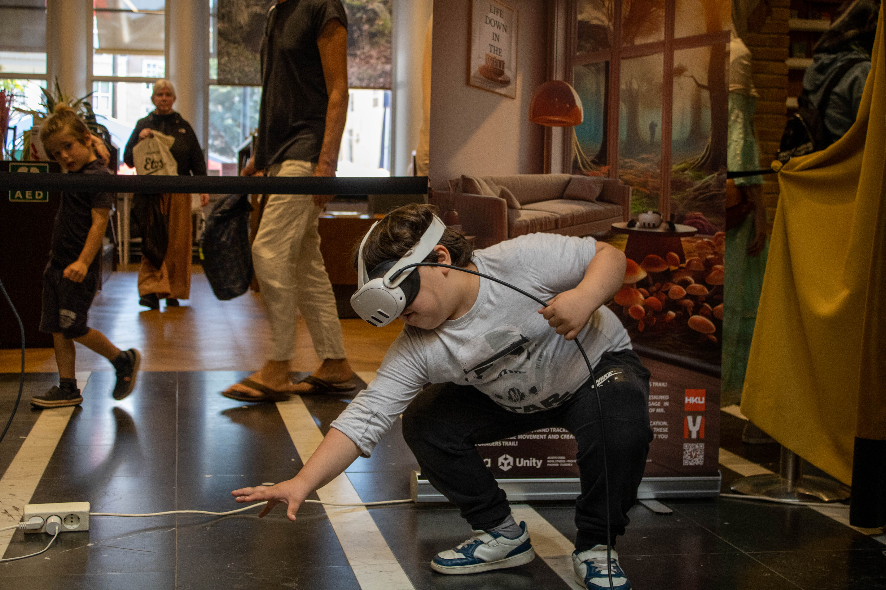

The Foragers Trail
'The Forager's Trail' A mixed reality experience that merges virtual and real-world environments, made for my graduation project during my studie Interaction Design at the HKU, appealing to both VR enthusiasts and newcomers. In this experience, players navigate their own living spaces, which are transformed into dynamic game environments.
Using Meta Quest 3 headsets, players scan their rooms to create personalized game worlds, where everyday objects become part of the gameplay. As they explore "The Forager's Trail," they move through virtual landscapes, solve puzzles, and find hidden treasures—all within their own homes.
With Colocation and Shared Spatial Anchors, players can invite friends to join them in their quests, enabling shared local gameplay. This allows for collaborative problem-solving or friendly competition, creating a unique shared experience.
This project showcases my work with Mixed Reality technology and explores the potential of VR in familiar, everyday spaces, encouraging new ways to think about virtual experiences.

 



Feedback project - final grade: 10
'The Forager's Trail' is a remarkable example of Mixed Reality. It demonstrates thorough research into the complexities of the technology, addressing its limitations and disadvantages, and especially exploring and further developing its potential regarding user experience. While it may currently seem like a gimmick, as Yannick mentions, he viewed 'grounding' as an immersive opportunity when executed well, and sharply highlighted the importance of credibility in reality, as well as the value of invoking fantasy and encouraging physical movement. Yannick has gone very far in exploring the potential for collaboration and multiplayer modes in MR, which has undoubtedly taken a lot of time and effort. What emotion do you want to convey through UX? Your goal is to "reignite the wonder of the XR experience" through effective object tracking, and in this, Yannick has succeeded — well done! Multiplayer co-location games are an emerging trend, and Yannick is an up-and-coming designer and researcher who could be of great value to the MR world. Wishing Yannick all the best with PeakUnbound in the future! -Irene van Peer, Christian Roth, Teun Dubbelman